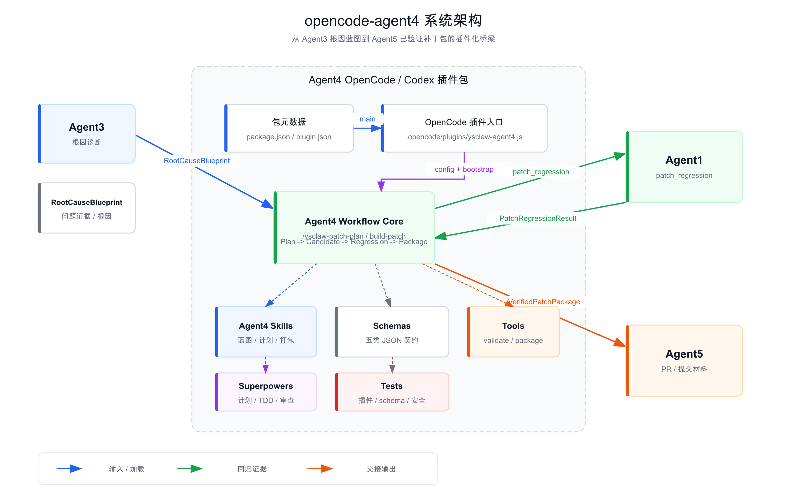
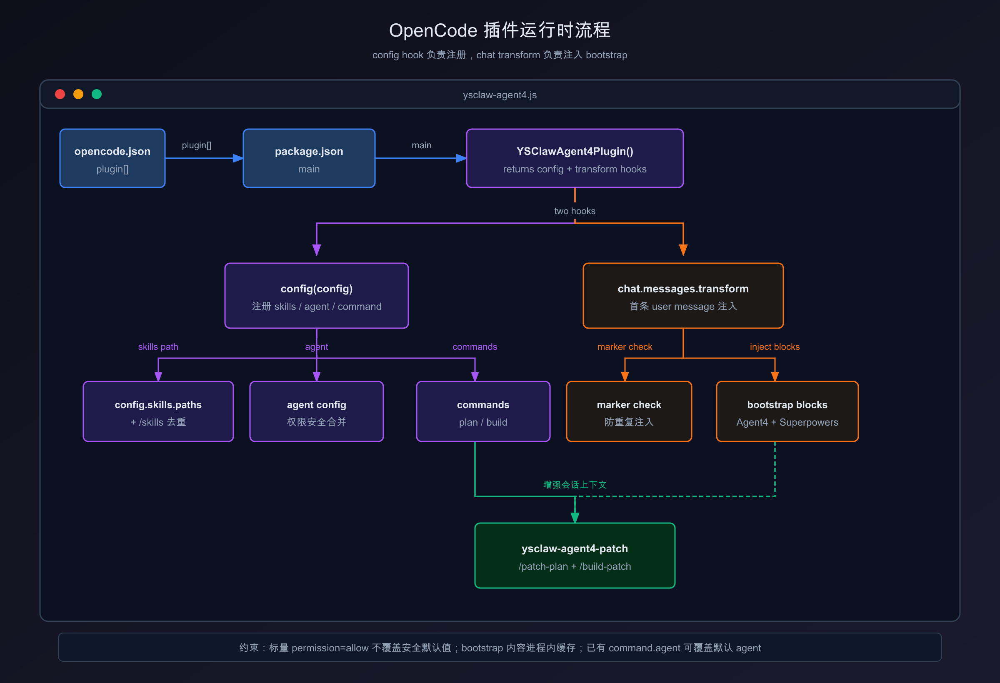

YSCLAW PATCH WORKFLOW
00 / 20s
AGENT4
把根因诊断变成可验证补丁。
位于 Agent3 与 Agent5 之间，负责计划、候选补丁、回归证据和交接包。
Agent3
RootCauseBlueprint
Agent4
Patch workflow
Agent5
PR handoff

PLAN BEFORE PATCH
/ysclaw-patch-plan
先计划，后修改。
规划节点只读。RootCauseBlueprint 通过结构校验后，才产出 PatchPlan。
构建只能基于已确认计划，且只触碰计划范围内的文件。
RootCauseBlueprint
problem · evidence · candidateFiles
PatchPlan
objective · changes · validationPlan
OPENCODE PLUGIN SURFACE
.opencode/plugins/ysclaw-agent4.js
plugin
注册 skills，注入 Agent4 与 Superpowers bootstrap。
skills
规划、回归验证、已验证补丁包写作。
schemas
把跨 Agent 交接对象固定为 JSON 契约。
tools
确定性校验、diff 捕获、ID 链检查。

FACTS BEFORE CLAIMS
git diff + agent1 patch_regression
diff --git a/tools/ysclaw-agent4-tools.js
- accept loose regression command
+ assertSafeRegressionCommand(command)
+ captureGitDiff(cwd)
PatchCandidate.gitDiff = source_of_truth
Agent1: patch_regression -> pass
PatchCandidate
changedFiles 与真实 Git 差异一起打包。
PatchRegressionResult
Agent1 回归结果被归一化为结构化证据。
VerifiedPatchPackage
只有差异和证据闭环后才可生成。
FAIL CLOSED BY DESIGN
schema · command · id-chain · permission
SCHEMA
非法 RootCauseBlueprint、PatchPlan 或回归结果直接拒绝。
COMMAND
只允许白名单形式：agent1 patch_regression。
ID CHAIN
blueprintId、patchPlanId、patchCandidateId 必须逐级一致。
PERMISSION
标量 allow 不能覆盖 Agent4 的安全默认值。
REJECT
换行命令、串联、重定向、命令替换、证据标识不一致，全部失败关闭。
VERIFIED HANDOFF
ysclaw.verified_patch_package.v1
VerifiedPatchPackage
root cause summary
confirmed patch plan
git diff as candidate fact
Agent1 regression evidence
Agent5 handoff instructions
Agent5
基于已验证差异准备 PR 和提交材料。

SUPERPOWERS
规划、TDD、系统化调试、代码审查和分支收尾作为方法论增强层。
Agent4 提供可审计的补丁交付路径。